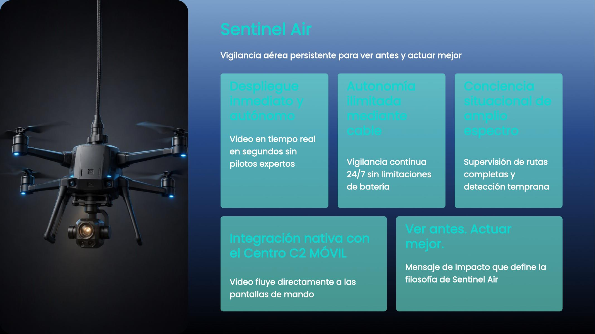
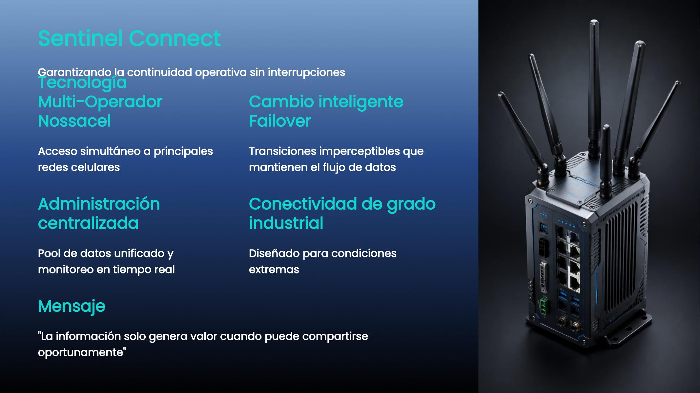
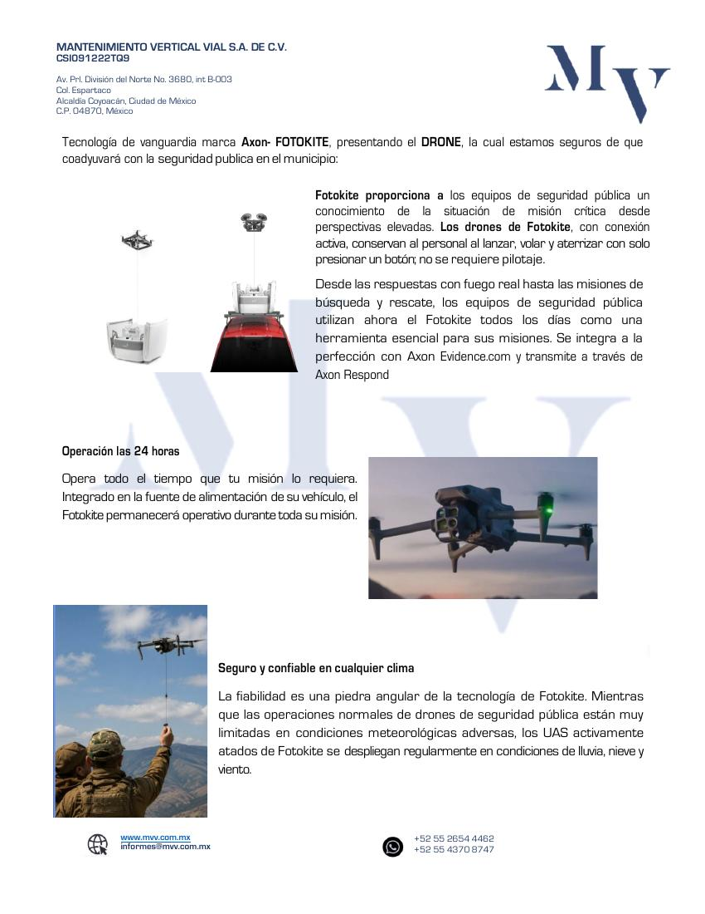
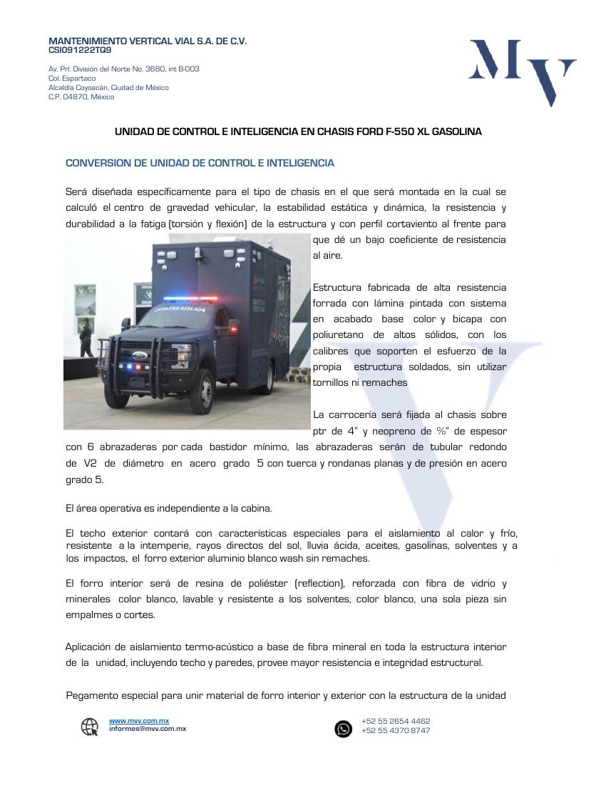

Ingeniería
Arquitecturas alineadas con el entorno, el riesgo y la operación.
MVV Soluciones Integrales
Diseñamos e integramos soluciones para fortalecer la conciencia situacional, la coordinación y la continuidad de operaciones estratégicas.

Quiénes Somos
MVV articula ingeniería, tecnología, implementación y acompañamiento para entregar soluciones completas, interoperables y preparadas para evolucionar.
Arquitecturas alineadas con el entorno, el riesgo y la operación.
Tecnologías y plataformas coordinadas bajo una sola solución.
Suministro, configuración, pruebas, capacitación y puesta en marcha.
Soporte, mantenimiento y evolución tecnológica de la solución.
Experiencia MVV
La experiencia de MVV se concentra en infraestructura de seguridad, videovigilancia, comunicaciones, centros de control y soluciones llave en mano para entornos de alta exigencia.
Un solo responsable para coordinar la solución completa.
Portafolio de soluciones
MVV Soluciones Integrales es la marca institucional. Sentinel Air, Command Mobile y Connect son productos independientes que pueden implementarse de forma individual o integrarse conforme a cada operación.

Vigilancia aérea persistenteProducto 01 · MVV Sentinel Air
Plataforma aérea cautiva basada en Fotokite, diseñada para proporcionar una perspectiva elevada y video en tiempo real sin requerir pilotaje especializado. Su alimentación mediante cable permite mantener la operación durante el tiempo que la misión lo requiera.
 Centro C2 móvil
Centro C2 móvilProducto 02 · MVV Sentinel Command Mobile
Unidad móvil de control e inteligencia sobre chasis Ford F-550, con área operativa independiente, estaciones de trabajo, visualización, comunicaciones, energía de respaldo y equipamiento para coordinar operaciones en campo.

Comunicaciones resilientesProducto 03 · MVV Sentinel Connect
Solución de comunicaciones multioperador orientada a fortalecer el flujo de video, datos y geolocalización entre equipos en campo, unidades móviles y centros de mando.
Próxima solución MVV
La siguiente generación de coordinación, inteligencia y operación integrada.
Este módulo se habilitará conforme avance su definición técnica, operativa y comercial.
Propuesta económica
Las configuraciones pueden evolucionar según las necesidades del proyecto. Los importes y condiciones corresponden a la propuesta comercial incluida en esta versión.
Los precios no incluyen IVA. El alcance final, logística, adecuaciones y condiciones de implementación deberán confirmarse mediante revisión técnica y comercial.
Abrir propuesta comercial completaDocumentación
Los documentos se abren en una pestaña nueva. Para actualizar cualquiera de ellos en GitHub, sustituya el PDF conservando exactamente el mismo nombre.

Arquitectura, ciclo operativo y componentes.
Abrir documento →
Alcance, inversión y condiciones comerciales.
Abrir documento →
Operación prolongada y perspectiva elevada.
Abrir documento →
Conversión y equipamiento de la unidad C2.
Abrir documento →